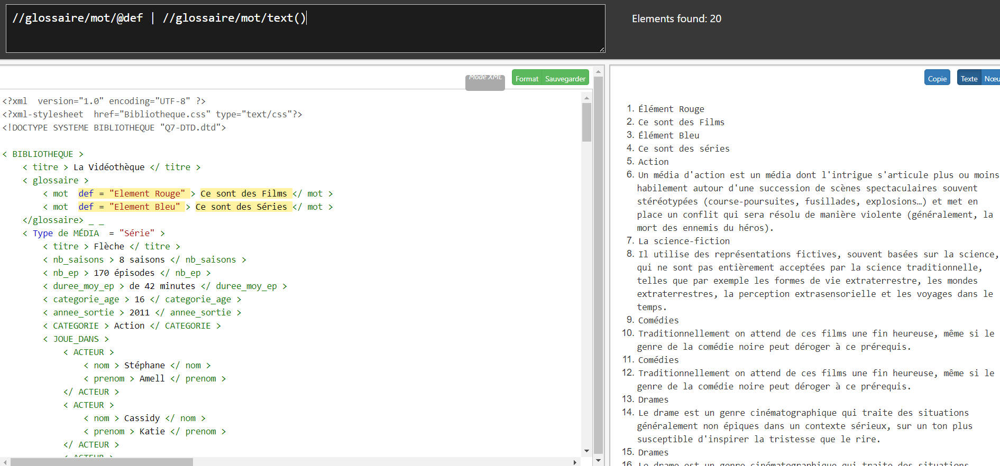
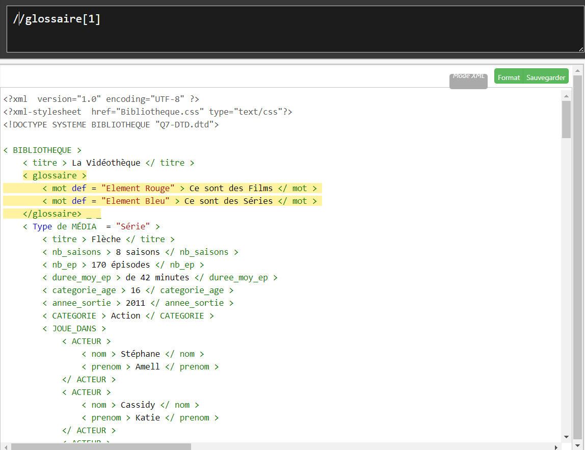

Nos requêtes XPath
Requète XPath sur l'XML
a - Requête XPath pour fournir le contenu des éléments <glossaire>

//glossaire/mot/@def | //glossaire/mot/text()Cette requête renvoie le contenu des éléments <mot> qui sont les enfants de l'élément <glossaire> . Plus précisément, elle renvoie la valeur de l'attribut "def" pour chaque élément <mot> ainsi que le contenu textuel de chaque élément <mot>.
b - Requête XPath pour fournir le premier élément <glossaire>

//glossaire[1]Cette requête renvoie le premier élément <glossaire> qui est un enfant direct de l'élément <BIBLIOTHEQUE>.
c - Requête XPath pour fournir les éléments <glossaire> n'ayant pas d'attribut auteur
//glossaire[1]Cette requête renvoie les éléments <glossaire> qui ont au moins un enfant <mot> sans attribut "auteur". La fonction non() est utilisée pour sélectionner les éléments pour lesquels l'expression mot/@auteur est fausse.
Requète XPath sur l'XHTML
d - Pour fournir les valeurs des attributs href dans un document XHTML
//a/@hrefCette requête va renvoyer toutes les valeurs de l'attribut href dans le document XHTML.
e - Pour compter le nombre d'images dans un document XHTML
count(//img)Cette requête va renvoyer toutes les valeurs de l'attribut href dans le document XHTML.